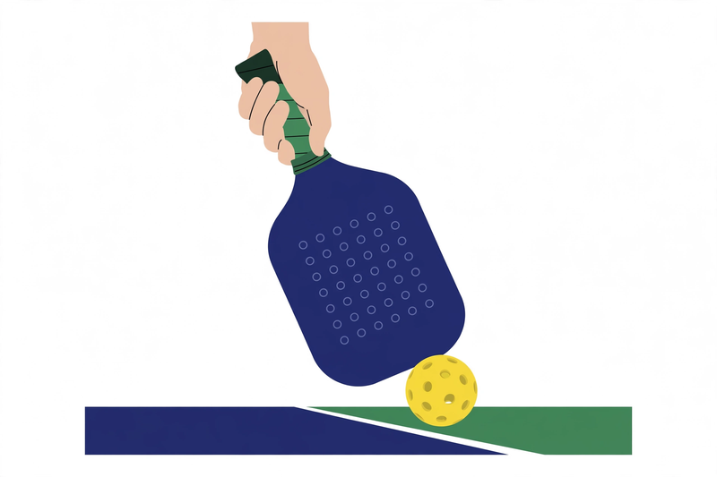

The topspin forehand third shot drop
This shot is about turning a strength into a dangerous weapon. The goal is to consistently land the ball in the kitchen with spin and shape.
The clock technique
Visualize the ball like a clock. Start your swing at 6:00 and brush up through the ball toward 12:00. This upward motion is powered by your shoulder and forearm.
Grip pressure
Many players struggle with ball control because they hold the paddle too tightly. Keep your grip pressure at a relaxed 3 or 4 out of 10. A softer grip helps take the pace off and drops the ball precisely into the kitchen.
Practice
Start by self-feeding balls to get the feel of that upward brushing motion before moving into full drills.
Mastering resets
Resets are essential for neutralizing your opponent's pressure, especially when you are in the transition zone.
Stay low
If a ball is flying toward you at shoulder height, let it go; it is likely going out. Always maintain a low, athletic stance to meet balls heading toward your feet.
The relaxed grip
Just like with the third shot drop, a relaxed grip is key. When you tense up, the ball travels too far. A soft hand will make the ball move toward the kitchen in a slow, controlled motion.
Paddle positioning
Keep your paddle tip down. By keeping the paddle face angled down, you increase the available surface area for contact, which creates a more predictable, forgiving shot—even when dealing with an opponent's heavy topspin.
